“
우리는 늙습니다
”
“
노화를 겪으면
어떻게 바뀔까요?
”
어떻게 바뀔까요?
대한민국 치매 현황
60세 이상 추정치매환자수
치매환자 1인당 치매관리비
출처 : 전국치매역학조사 (보건복지부 중앙치매센터, 2017 ), 2017~2022년 주민등록연양인구(통계청, 2023)
이 같은 어려움을 겪는 어르신은 해마다 늘고 있어요
2026년이면 65세 이상이
우리나라 인구 5명 중 1명이 됩니다
어른신들은 홀로 지낼수록 치매에 걸리기 쉽습니다
사회가 감당해야 할 비용도 늘어납니다
2026년이면 65세 이상이
우리나라 인구 5명 중 1명이 됩니다
어른신들은 홀로 지낼수록 치매에 걸리기 쉽습니다
사회가 감당해야 할 비용도 늘어납니다
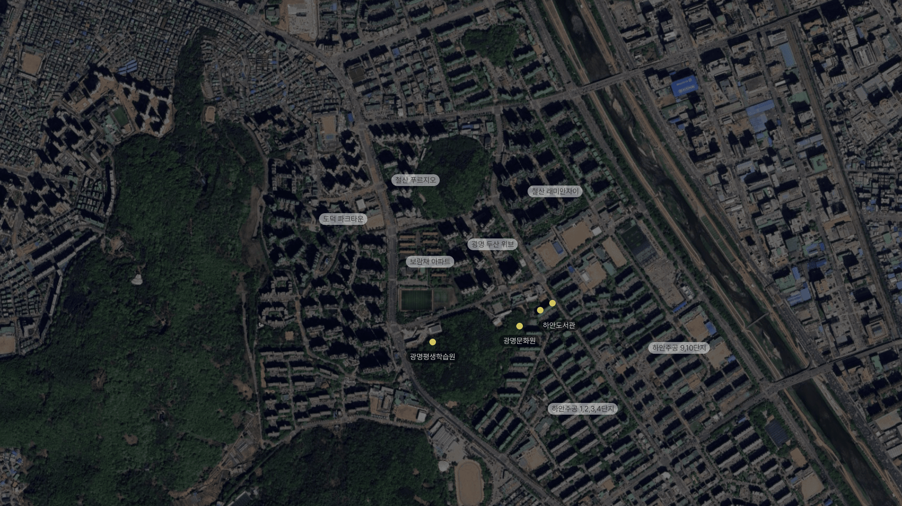
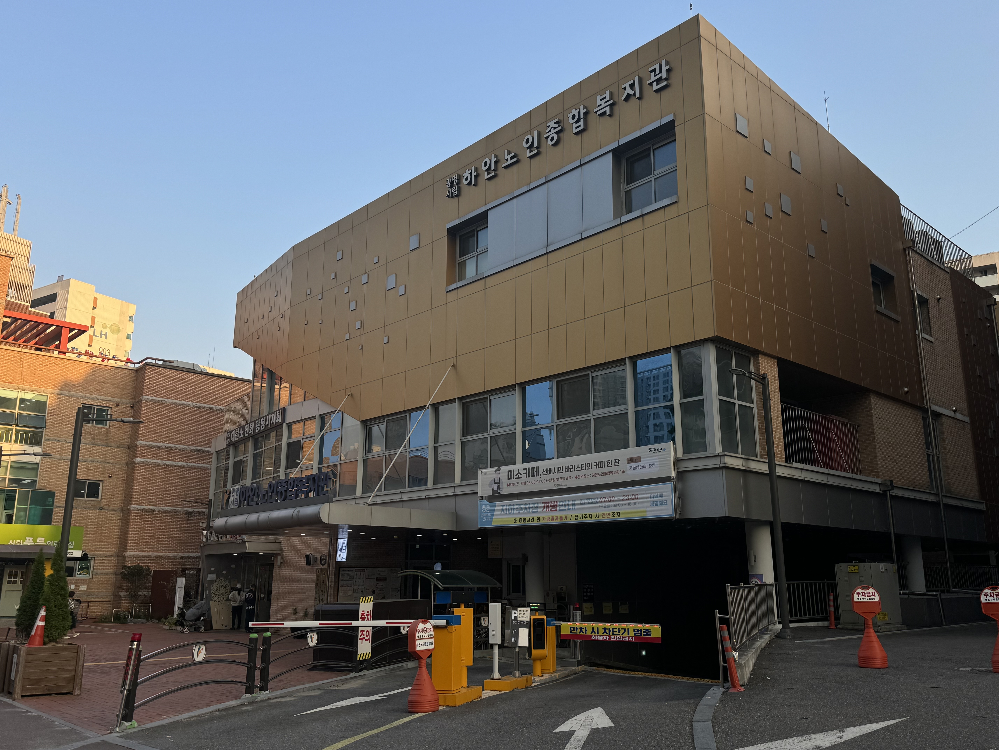
집을 떠나 실·내외 공간에서 활동한다면,
그 공간에서 쉬는 것뿐 아니라
놀고, 치료받고, 일자리까지 얻을 수 있다면,
어르신들에게 어떤 변화가 생길까요.
경기도 광명시 구도심에 있는 하안노인복지관은
어르신들의핫 플레이스
입니다
2023년 기준 등록 어르신이
4,200여명
인근 철산동·소하동에 사는 어르신들도 이곳을 찾습니다.
집을 떠나 실·내외 공간에서 활동한다면,
그 공간에서 쉬는 것뿐 아니라
놀고, 치료받고, 일자리까지 얻을 수 있다면,
어르신들에게 어떤 변화가 생길까요.
복지관 별관의 과거 모습
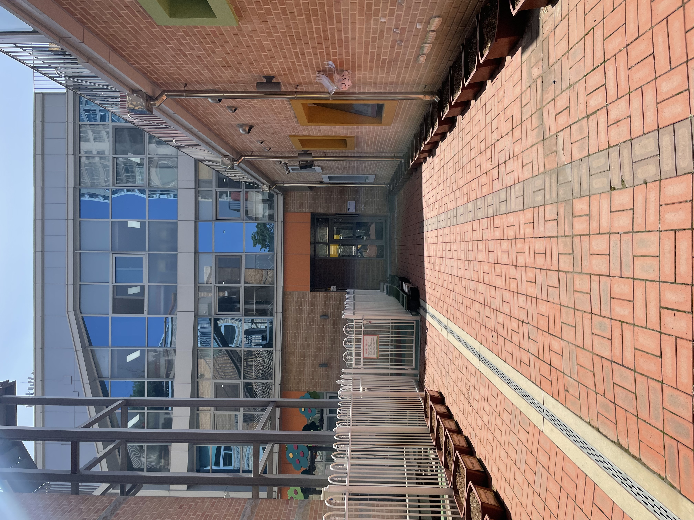
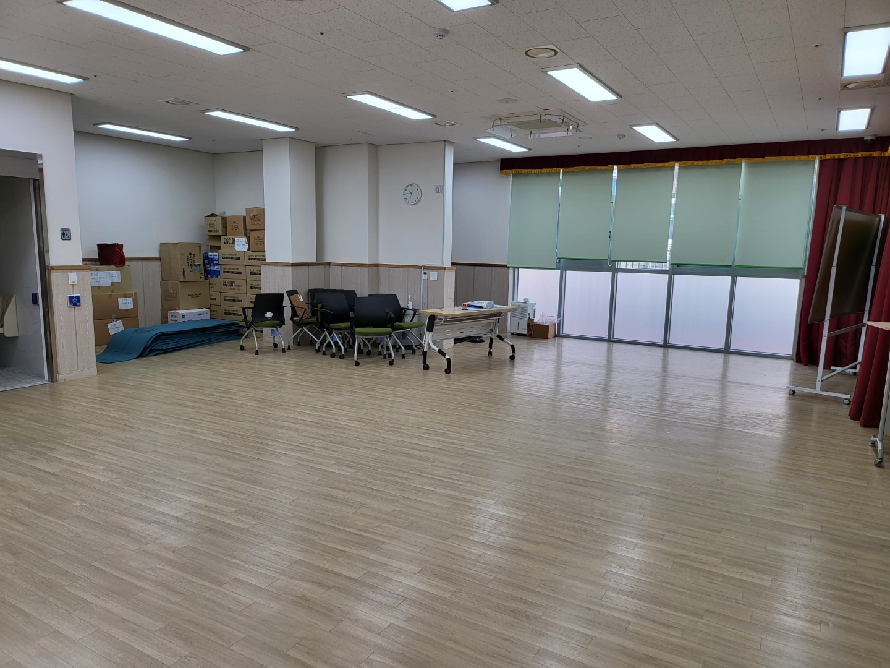
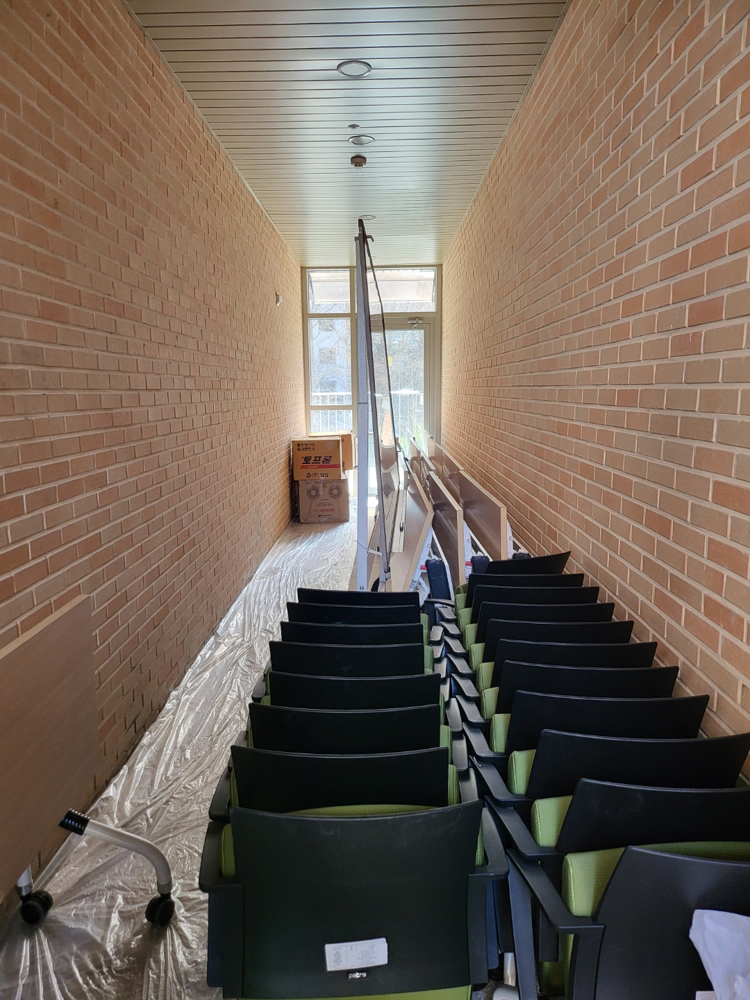
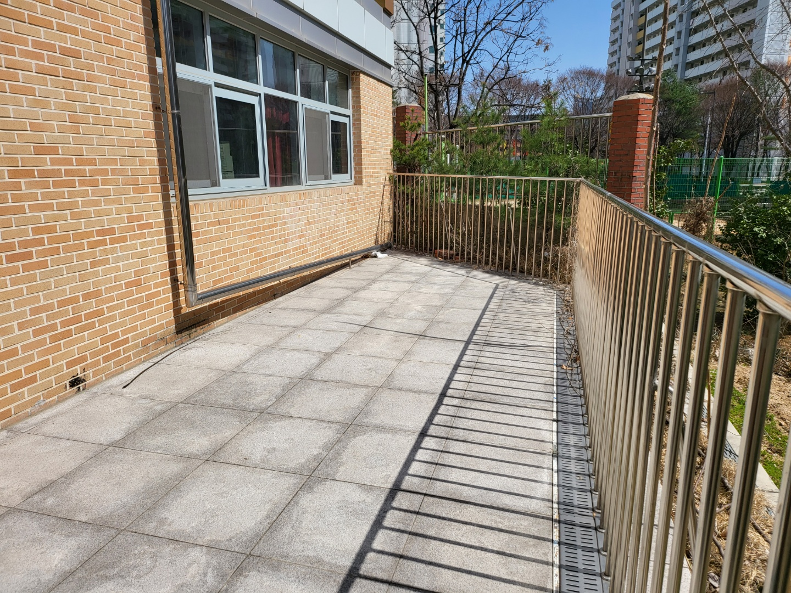
‘인생정원’을 만든 김정욱 총감독은 말합니다
“
어르신들이 가장 쉽게 접근할 수 있는 게 식물이죠
”
어르신들이 가장 쉽게 접근할 수 있는 게 식물이죠
가꾼 식물이 자라나는 모습을 보면서, 성취감과 긍정적인 감각을
얻으십니다
이를 통해 어르신들의 지속적인 방문을 유도하고,
사회적인 교류를 할 수 있도록 하는 것을
‘인생정원’의
목표로 삼았습니다
”
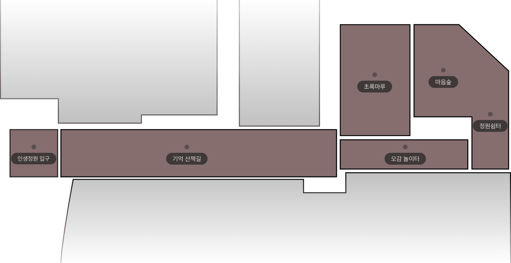
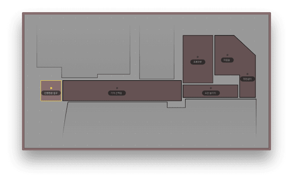

전에는 없던, 대문을 만들었어요
어린이집 건물 사이에 찾기 힘들었던 출입구를
어르신들이보다 쉽게 찾을 수 있게 됐어요
대문에 ‘인생정원’이라는 글씨가 눈에 띄죠
함께하는 정원이라는 뜻입니다
바람에 소리를 내는 풍경과 장독대도 있네요
어르신들이 기대거나 손을 짚을 수 있는 지지대도
곳곳에 설치돼 있습니다
대문 안 ‘인생정원’은 어떤 모습일까,
호기심이 일어납니다
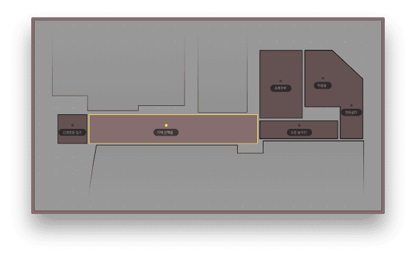
이곳을 자주 찾는 강부덕씨는 말합니다
“
여기 들어오는 입구부터 꽃도 있고 파란 이파리도 있고
”
여기 들어오는 입구부터 꽃도 있고 파란 이파리도 있고
이런 걸 보면 마음이 너무 좋아요
”
도시화로 고향을 잃은 어르신들은 여물통, 마중물 펌프, 새장 등의
소품을 보며
잠시 유년시절을 떠올리기도 합니다
어르신들이 손을 짚을 수 있는 지지대와
재활용 플라스틱을 이용해 만든 의자도 곳곳에 있어요
기억산책길은 어르신만 찾는 곳이 아니예요
매일 어린이집 아이들이 이곳에 들르고, 이따금씩 어르신들과 함께
텃밭을 가꿉니다
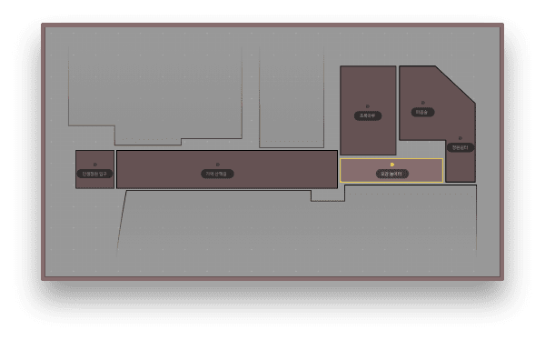
내부 통로로 쓰이는 공간을 ‘오감 놀이터’로 만들었어요
벽면 액자에 담긴 이끼를 만져보거나 벽면 칠판에 글을 남기기도
합니다
감각 훈련을 돕는 것이죠
칠판 밑부분을 난간처럼 만들어서,
걷기 힘든 어르신들이 이용할 수 있게 했어요
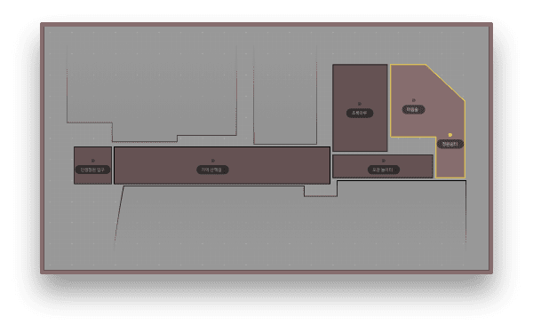
햇볕과 바람을 맞으면서 쉬고 싶거나
텃밭에서 식물을 키우고 싶을 때 찾는 ‘정원 쉼터’입니다
물이 흐르는 배수로를 설치해 운치를 더했어요
역시 쪼그려앉기 어려운 어르신을 위해 지지대를 설치했고요
기존에 있던 벽을, 통유리 문으로 교체해
실내와 연결되게 했어요
실외와 실내 활동을 동시에 할 수 있도록요
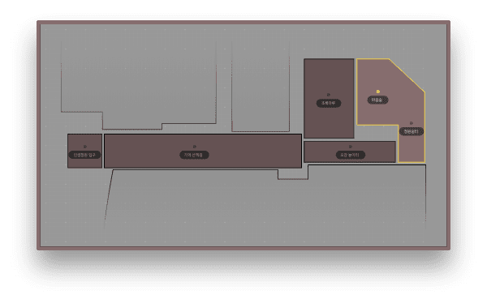
‘마음 숲’은 실내에 숲이 우거진 곳입니다
통유리문 너머로 바깥을 볼 수 있어
바깥에서 활동하는 것 같은 기분이 들죠
마음 숲에선 풀벌레 우는 소리, 새 소리, 바람소리를 들을 수 있어요
하늘에서 비가 내리는 것처럼,
천장에서 떨어지는 물로 식물을 키울 수 있게 해놨어요
어르신들의 감각을 깨우고,
우울감을 떨쳐내는 데 도움을 주는 장소죠
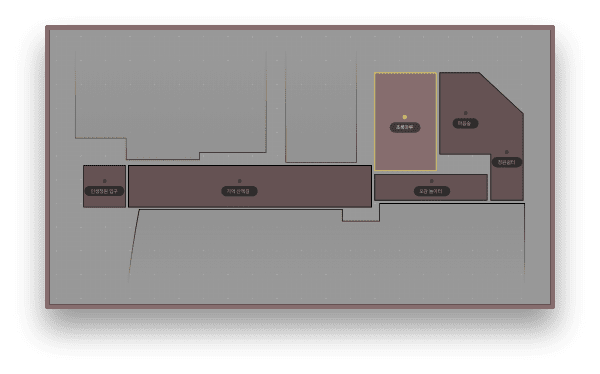
마음 숲 옆에 있는 ‘초록마루’에서는
인생정원에서 키운 식물을 활용한 원예교육,
아로마 오일을 활용한 감각교육, 숫자놀이 등이 열려요
흙과 식물로 채워진 텃밭 책상이 있고,
텃밭 싱크대도 있어 실내 원예활동을 할 수 있죠
마루를 따로 만들어서
책상이 불편한 어르신들은 앉아서 활동할 수 있게 했어요
대한민국 치매 현황
인생정원을 더욱 특별하게 하는 것은
어르신들의 인지건강을 위한 활동뿐 아니라 어르신 일자리까지
제공한다는 점입니다
광명시 일자리 프로그램과 연계한 ‘인생정원 해설사’라는 직업이죠
한 달간 원예교육을 받은 어르신들은 인생정원 해설사가 될 수
있습니다
해설사들은 주 3시간씩 인생정원을 가꾸고, 이곳을 찾는 이들에게
정원을 소개하는 일을 합니다
인생정원 해설사는 20명에 달합니다